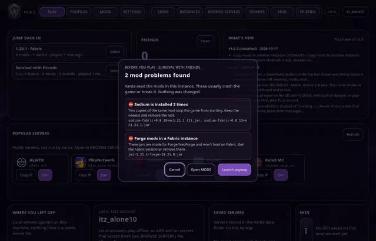
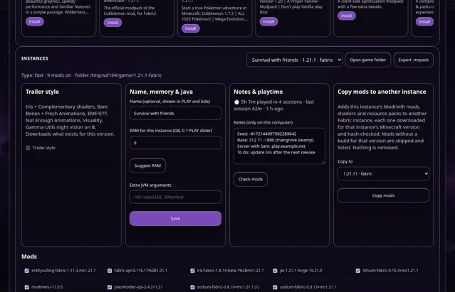
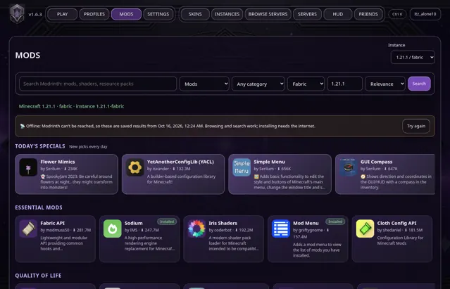

News · · v1.6.4
Vanta 1.6.4: a mod check before you play, playtime and notes
Vanta now spots broken mod setups before Minecraft starts, counts your playtime, keeps notes per instance and lets you browse mods offline.
Vanta 1.6.4 is out for Windows and macOS. Press Update in Vanta's top bar to get it; your accounts, worlds and mods are not touched.
A mod check before you play
When you press PLAY, Vanta first reads the mods in the instance, the same way the game will, and tells you about problems that usually crash it:
- The same mod installed twice.
- Forge or NeoForge mods in a Fabric instance (or the other way round).
- Missing Fabric API or another mod that a mod needs.
- Mods made for a different Minecraft version, or for a different version of another mod.
- Pairs that don't work together, like OptiFine with Sodium, and damaged or half-downloaded jars.
You can Launch anyway, Open MODS to fix it, or cancel. The check only reads files; it never changes your mods folder. INSTANCES › Check mods runs it any time.

Playtime and notes
Vanta now counts the time you spend in each instance while the game runs. Home shows your total and each instance's time; INSTANCES shows sessions and your last session. It's stored only on your computer.
Each instance also has a notes box for seeds, server IPs or what you were building. Notes save as you type.

MODS works offline
If Modrinth can't be reached, MODS no longer goes blank. It shows the rows you saw last time and searches everything Vanta has saved, with a note saying the results are saved ones. Installing still needs the internet.

A smarter crash helper, and a faster start
The crash helper recognises 14 more crashes, such as duplicate mods, a missing Fabric API, Java being too new, shader compile errors, graphics driver crashes, broken config files and damaged worlds, and says what to do in plain words.
Home also opens faster: on a cold start it now fills in about 0.15 seconds instead of about 2.3, because release notes refresh in the background.